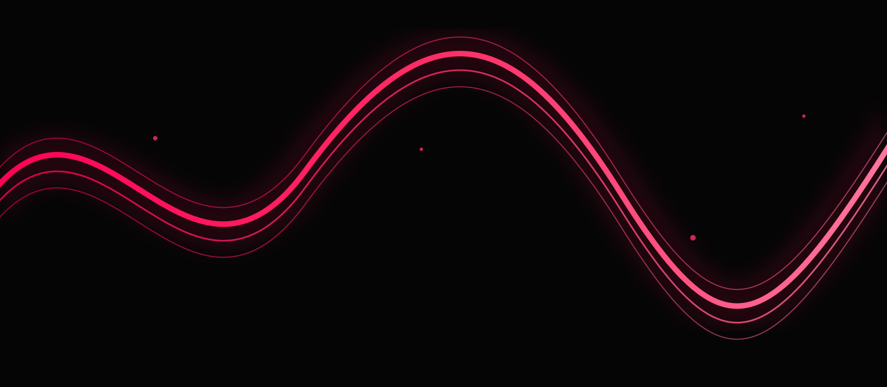
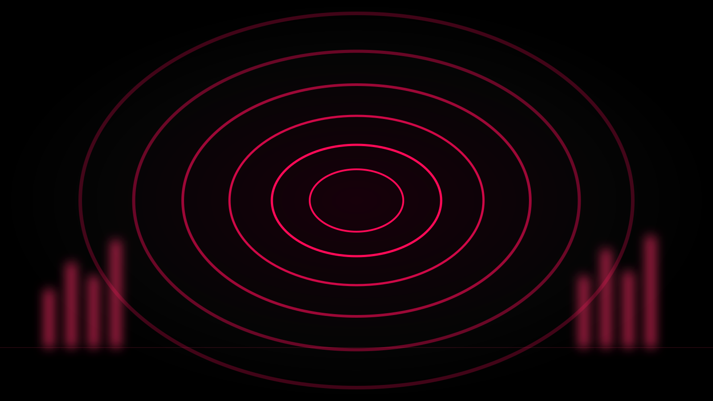
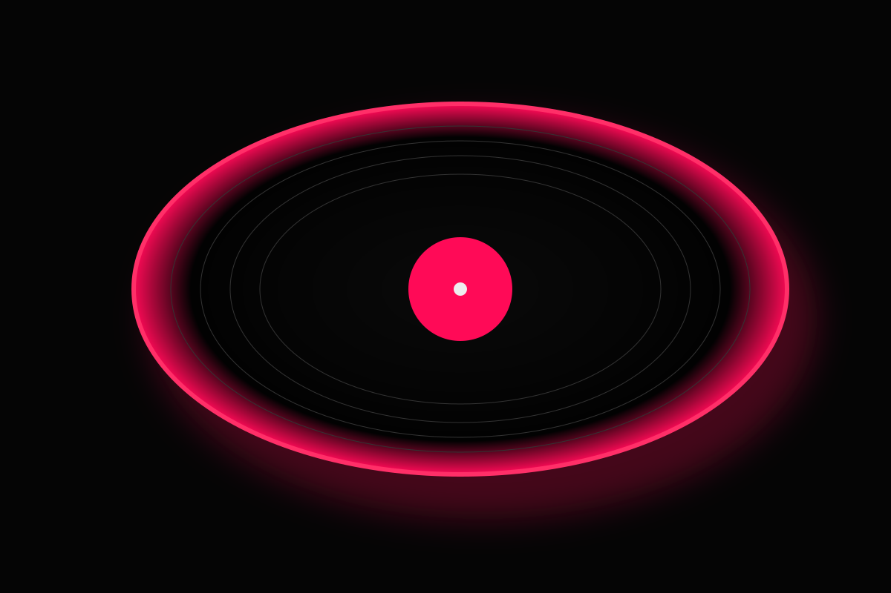

Find what you were looking for.
Search across songs, artists and albums without getting pulled away from the music.
LOOPIN / MUSIC
Find the song. Follow the feeling.
Because one play is never enough.

It's something you return to. Loopin is built around that little moment when a song ends and you already know what comes next.
See the experience ↘Search across songs, artists and albums without getting pulled away from the music.
Discover new sounds while keeping the track you love close.
Decide what plays next. Change your mind. Keep the flow moving.
Play it again. That's the whole idea.

Vijay Yesudas · Premam
Different moods. Different days.
One place to keep them moving.
The useful stuff stays close. Everything else gets out of the way.
Get from a thought in your head to the exact song in seconds.
⌕Choose what comes next and keep the session yours.
≋Built around repeat listening, because some songs don't need an ending.
↻

Loopin is an evolving Android music project focused on a simple listening experience — discovery, playback, queue and repeat.